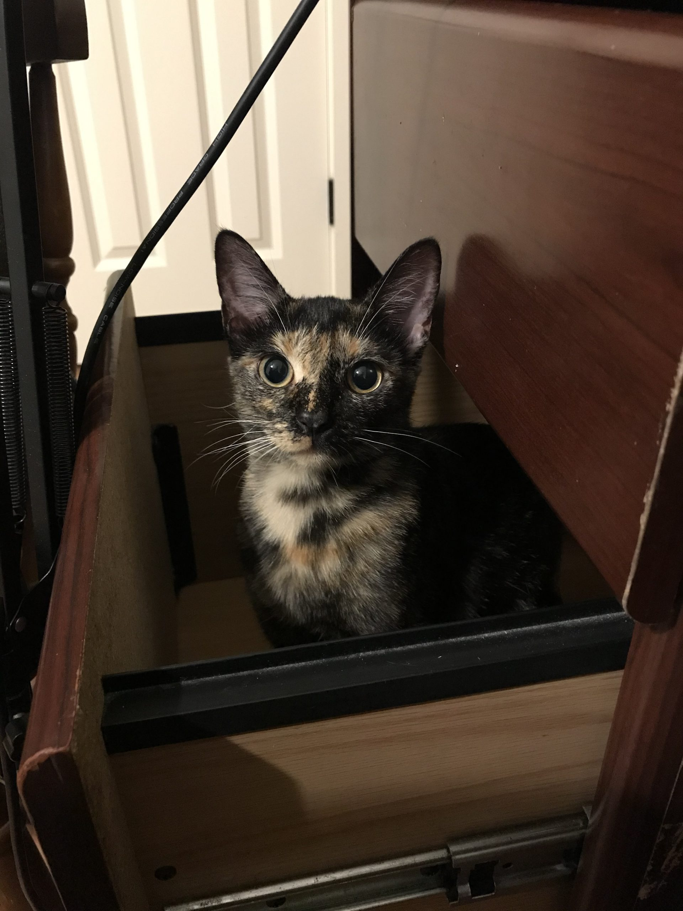

Miroslav Tushev

Office: 2318 Patrick F. Taylor Hall
E-mail: mtushe1@lsu.edu
CV
GitHub
Twitter
Google Scholar
About Me
I am currently a Ph.D. student in Computer Science, at Louisiana State University. I received a Masters Degree in Computer Science in 2018. I am working with Dr. Anas Mahmoud at SEEL.
My research lies in the area of Open Source Software, with the emphasis on code evolution and human factors. My current project involves analyzing social issues in Shared Economy apps.
News
- Nov. 2019. Our paper "Using GitHub in Large Software Engineering Classes: An Exploratory Case Study" has been accepted to Computer Science Education journal
- Oct. 2019. I'll be attending ICSME in Cleveland, Ohio to present our paper "Linguistic Change in Open Source Software"
Education
- Doctor of Philosophy (Ph.D.), Software Engineering, Louisiana State University
- Master of Science (M.S.), Computer Science, Louisiana State University
- Specialist degree (bachelor’s equivalent), Management and Organization, The Russian Presidential Academy of National Economy and Public Administration
Publications
- Using GitHub in Large Software Engineering Classes: An Exploratory Case Study
M. Tushev, G. Williams, A. Mahmoud, Computer Science Education (CSE), 2019. - Mobile App Privacy in Software Engineering Research: A Systematic Mapping Study
F. Ebrahimi, M. Tushev, A. Mahmoud, arXiv preprint arXiv:1910.03622, 2019. - Linguistic Change in Open Source Software
M. Tushev, S. Khatiwada, A. Mahmoud, International Conference on Software Maintenance and Evolution (ICSME), 2019. - Just Enough Semantics: An Information Theoretic Approach for IR-Based Software Bug Localization
S. Khatiwada, M. Tushev, A. Mahmoud, Information and Software Technology (IST), 2018, vol. 93, pp. 45-57. - An Information Theoretic Approach for Traceability Link Retrieval
S. Khatiwada, M. Tushev, and A. Mahmoud, Grand Challenges of Traceability: The Next Ten Years, 2017, p. 59.
Positions
- August 2018 – present. Teaching Assistant, CSC 4330 (Software Systems Development)
- May 2018 – present. Research Assistant
- June 2019. Teaching Assistant, Intro to Computer Science and Programming (Grades 9-12)
- August 2015 – May 2018. Graduate Assistant, LSU International Services Office
Hobbies
- Apart from Software Engineering, I’m interested in Reverse Engineering and Memory Forensics. I have experience with development plugins for volatility
- I’m also a bass player
- I also enjoy and play PC games competitively, such as Starcraft BW, Battlefield and Quake
- and I love my cat
